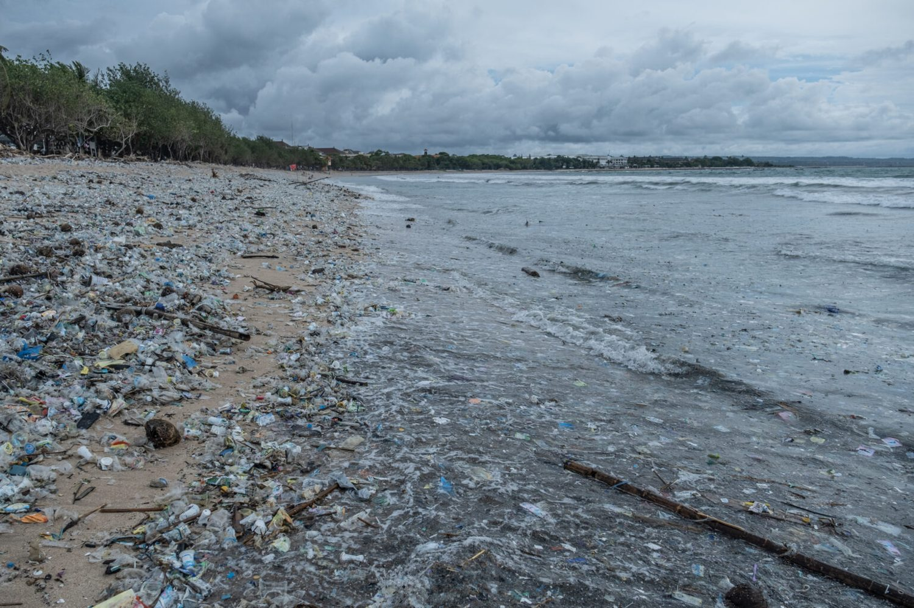

EcoReport
Detail fasilitas pelaporan sampah liar.
EcoReport dirancang sebagai antarmuka pelaporan yang sederhana, cepat, dan mudah dipahami oleh pengguna umum.

Fungsi Utama
Mengubah keluhan menjadi data lokasi.
Fasilitas ini menampilkan form laporan, peta simulasi, status, dan prioritas tindak lanjut. Data yang diminta dibuat ringkas agar pengguna tidak berhenti di tengah proses.
✓
Lokasi jelas
Input lokasi membantu komunitas menemukan titik masalah.
✓
Kategori sampah
Jenis dominan membantu pemilahan jalur penanganan.
✓
Status transparan
Pengguna melihat apakah laporan menunggu verifikasi atau sudah dijadwalkan.
Simulasi data lokasi
Titik laporan dikelompokkan menurut area dan urgensi.
Titik laporan dikelompokkan menurut area dan urgensi.
Uji form pelaporan pada halaman laporan.
Form bekerja sebagai simulasi front-end sehingga cocok untuk demo desain tanpa backend.
Buka Form Laporan